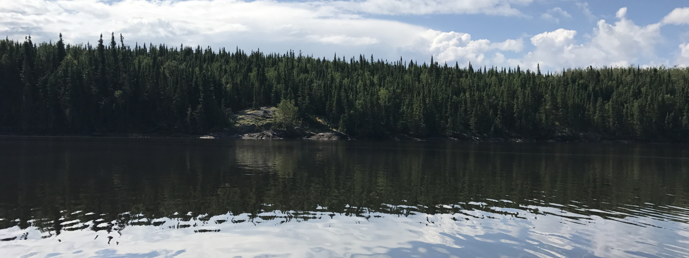

Welcome to From Bergh to Beyond
Welcome to my travel blog! Throughout my life I have been fortunate enough to go on a few amazing trips and I want to share my experiences with you. From the beautiful lakes in Canada to the breath-taking mountains in Montana, to standing on the edge of the Grand Canyon, I have seen some gorgeous places and I want to dive into my experiences and allow a glimpse into the best parts of my adventures. I hope you enjoy reading about my travels as much as I got to enjoy them!
About Me
My name is Wyatt and I am 25 years old, and have been to some really cool places. I have always been fascinated by the world and all of the different cultures and landscapes the world has to offer. My dream is to travel to Japan and see the beautiful rich culture and history of the country. My Fiance and I are saving money to go on a vacation to Japan once we are married. I have been to a few places only in the North America region, but I dream to explore various regions of the world and experience the different cultures food and landscapes.